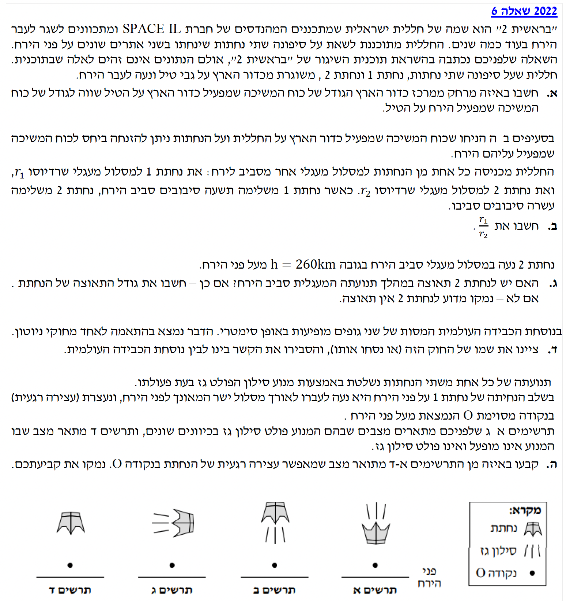
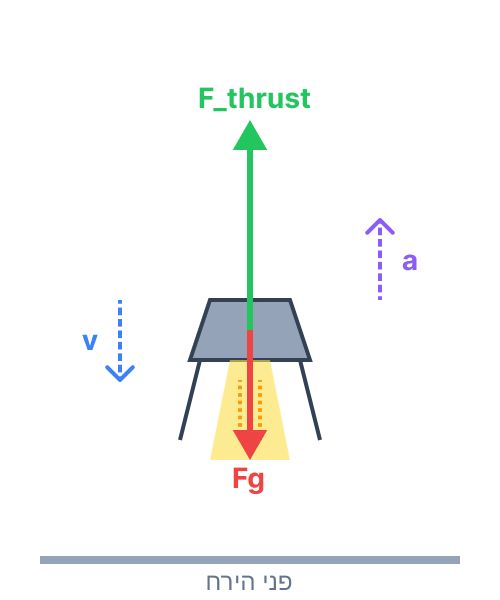

פתרון בגרות פיזיקה: מכניקה 2022
שאלה 6
נושא: כבידה (כוח משיכה עולמי, תנועה מעגלית של לוויינים, חוקי קפלר)
עודכן:
--- --:--:--

[תמונת השאלה המקורית]
לא נמצאה תמונה בשם question-image.png באותה תיקייה.
מה נתון:
אנו נדרשים לנתונים אסטרונומיים מתוך דף הנוסחאות (עמוד 8):
מסת כדור הארץ: \(M_e = 5.974 \cdot 10^{24} \text{ kg}\).
מסת הירח: \(M_m = 7.35 \cdot 10^{22} \text{ kg}\).
המרחק הממוצע בין מרכז כדור הארץ למרכז הירח (רדיוס מסלול הירח): \(D = 3.84 \cdot 10^8 \text{ m}\).
נגדיר את מסת חללית "בראשית 2" בתור \(m\).
מה מחפשים:
את המרחק \(r_e\) ממרכז כדור הארץ, שבו גודל כוח המשיכה של כדור הארץ על החללית (\(F_e\)) שווה לגודל כוח המשיכה של הירח על החללית (\(F_m\)).
נוסחאות ועקרונות בשימוש:
\( F = G \frac{m_1 m_2}{r^2} \)
חוק הכבידה העולמי של ניוטון (מתוך דף הנוסחאות).
הצבה ופתרון:
נשווה בין גודל הכוח שמפעיל כדור הארץ לגודל הכוח שמפעיל הירח על החללית. המרחק מכדור הארץ הוא \(r_e\), ולכן המרחק מהירח הוא המרחק הכולל פחות \(r_e\), כלומר \((D - r_e)\).
\[ F_e = F_m \]
\[ G \frac{M_e \cdot m}{r_e^2} = G \frac{M_m \cdot m}{(D - r_e)^2} \]
ניתן לצמצם את קבוע הכבידה העולמי \(G\) ואת מסת החללית \(m\) משני צדי המשוואה. לאחר מכן נוציא שורש ריבועי משני האגפים כדי לפשט את האלגברה (מותר לנו כי כל המרחקים והמסות חיוביים):
\[ \frac{M_e}{r_e^2} = \frac{M_m}{(D - r_e)^2} \]
\[ \frac{\sqrt{M_e}}{r_e} = \frac{\sqrt{M_m}}{D - r_e} \]
נבודד את \(r_e\) על ידי כפל בהצלבה:
\[ \sqrt{M_e} \cdot (D - r_e) = r_e \cdot \sqrt{M_m} \]
\[ D\sqrt{M_e} - r_e\sqrt{M_e} = r_e\sqrt{M_m} \]
\[ D\sqrt{M_e} = r_e (\sqrt{M_e} + \sqrt{M_m}) \]
\[ r_e = \frac{D\sqrt{M_e}}{\sqrt{M_e} + \sqrt{M_m}} \]
כעת נציב את הערכים המספריים. נחשב בנפרד את השורשים כדי להקל על החישוב:
\(\sqrt{M_e} = \sqrt{5.974 \cdot 10^{24}} \approx 2.444 \cdot 10^{12}\)
ו- \(\sqrt{M_m} = \sqrt{7.35 \cdot 10^{22}} \approx 2.711 \cdot 10^{11} = 0.2711 \cdot 10^{12}\).
\[ r_e = \frac{3.84 \cdot 10^8 \cdot 2.444 \cdot 10^{12}}{2.444 \cdot 10^{12} + 0.2711 \cdot 10^{12}} = \frac{3.84 \cdot 10^8 \cdot 2.444}{2.444 + 0.2711} = 3.84 \cdot 10^8 \cdot \frac{2.444}{2.7151} \]
\[ r_e \approx 3.456 \cdot 10^8 \text{ m} \]
המרחק ממרכז כדור הארץ שבו שקול כוחות הכבידה מתאפס הוא: \( r_e = 3.46 \cdot 10^8 \text{ m} \)
טיפ מורה:
שימו לב לתוצאה! המרחק הכולל לירח הוא בערך \(3.84 \cdot 10^8 \text{ m}\), והנקודה שמצאנו נמצאת במרחק של \(3.45 \cdot 10^8 \text{ m}\) מכדור הארץ. זה אומר שהנקודה קרובה מאוד לירח (כ-90% מהדרך אליו!). מדוע? כיוון שמסת כדור הארץ גדולה פי 81 בערך ממסת הירח, כדור הארץ ימשוך את החללית חזק יותר, ולכן עלינו להתרחק ממנו מאוד ולהתקרב לירח כדי ששני הכוחות יאזנו זה את זה. תמיד תשאלו את עצמכם בסוף חישוב האם התוצאה הגיונית פיזיקלית!
מה נתון:
נחתת 1 נעה במסלול שרדיוסו \(r_1\) מסביב לירח, בעוד שנחתת 2 נעה במסלול שרדיוסו \(r_2\) מסביב לירח.
נתון כי באותו פרק זמן (נקרא לו \(t\)), נחתת 1 משלימה 9 סיבובים בעוד שנחתת 2 משלימה 10 סיבובים.
מה מחפשים:
את היחס בין רדיוסי המסלולים: \( \frac{r_1}{r_2} \).
נוסחאות ועקרונות בשימוש:
\( \left(\frac{\bar{r}_1}{\bar{r}_2}\right)^3 = \left(\frac{T_1}{T_2}\right)^2 \)
החוק השלישי של קפלר (בדיוק כפי שמופיע בדף הנוסחאות). מכיוון ששתי הנחתות מקיפות את אותו גרם שמימי (הירח), אנו משתמשים ביחס הישיר בין זמני המחזור לרדיוסי המסלולים.
הצבה ופתרון:
תחילה נסיק מהנתונים את היחס בין זמני המחזור (\(T\)). זמן המחזור הוא הזמן לסיבוב אחד. מכיוון שבפרק זמן \(t\) נחתת 1 משלימה 9 סיבובים ונחתת 2 משלימה 10 סיבובים, ניתן לרשום: \( t = 9 \cdot T_1 = 10 \cdot T_2 \). ממשוואה זו נבודד את היחס בין זמני המחזור:
\[ \frac{T_1}{T_2} = \frac{10}{9} \]
נשתמש בחוק השלישי של קפלר מתוך דף הנוסחאות. עבור מסלולים מעגליים, הרדיוס הממוצע \(\bar{r}\) שווה לרדיוס המסלול \(r\), ולכן נוכל לרשום:
\[ \left(\frac{r_1}{r_2}\right)^3 = \left(\frac{T_1}{T_2}\right)^2 \]
כעת נציב את יחס זמני המחזור שמצאנו בשלב הקודם (\( \frac{10}{9} \)):
\[ \left(\frac{r_1}{r_2}\right)^3 = \left(\frac{10}{9}\right)^2 = \frac{100}{81} \]
\[ \frac{r_1}{r_2} = \sqrt[3]{\frac{100}{81}} \approx 1.072 \]
היחס בין רדיוס מסלול נחתת 1 לרדיוס מסלול נחתת 2 הוא: \( \frac{r_1}{r_2} \approx 1.07 \)
טיפ מורה:
בואו נחשוב על זה בהיגיון וללא נוסחאות: באותו פרק זמן, נחתת 1 הספיקה לעשות רק 9 סיבובים, בזמן שנחתת 2 הספיקה לעשות 10. מי מהן "איטית" יותר להשלים הקפה? נחתת 1. זה אומר שזמן המחזור שלה (הזמן לסיבוב אחד) ארוך יותר. החוק השלישי של קפלר מבוסס על עיקרון פשוט: ככל שגוף רחוק יותר ממרכז הכובד - לוקח לו יותר זמן להקיף אותו (כי המסלול גדול יותר, וכוח המשיכה חלש יותר). לכן, אם לנחתת 1 לוקח יותר זמן, היא בהכרח נעה במסלול גדול ורחוק יותר. התוצאה המספרית שלנו מראה ש-\(r_1\) אכן גדול מ-\(r_2\) (כי היחס שחישבנו גדול מ-1), וזה בדיוק מאשר את ההיגיון הזה! תמיד כדאי לוודא בסוף תרגיל שהתשובה המתמטית מסתדרת עם השכל הישר הפיזיקלי.
מה נתון:
נחתת 2 נעה במסלול מעגלי. גובה הנחתת מעל פני הירח הוא \(h = 260 \text{ km}\).
שלב 0 - המרת יחידות למערכת MKS:
יש להמיר את הגובה ממטרים: \( h = 260,000 \text{ m} = 2.6 \cdot 10^5 \text{ m} \).
רדיוס הירח (מדף הנוסחאות): \( R_m = 1.74 \cdot 10^6 \text{ m} \).
מה מחפשים:
האם יש לנחתת 2 תאוצה? אם כן, לחשב את גודלה. אם לא, להסביר מדוע.
נוסחאות ועקרונות בשימוש:
\( \vec{a} = \frac{d\vec{v}}{dt} \)
\( \Sigma F = m a_R \)
\( F = G \frac{m_1 m_2}{r^2} \)
הגדרת התאוצה הוקטורית, החוק השני של ניוטון, וחוק הכבידה.
הצבה ופתרון:
תשובה מילולית: כן, לנחתת יש תאוצה. אף על פי שגודל המהירות שלה במסלול מעגלי נותר קבוע, *כיוון* המהירות משתנה ברציפות לאורך המסלול המעגלי. מאחר שמהירות היא גודל וקטורי, כל שינוי בה (גם בכיוון בלבד) מצריך תאוצה. תאוצה זו נקראת תאוצה רדיאלית (או צנטריפטלית) וכיוונה תמיד כלפי מרכז המעגל.
חישוב גודל התאוצה: על פי החוק השני של ניוטון, שקול הכוחות הפועל על הנחתת (שהוא רק כוח הכבידה של הירח) שווה למסה כפול התאוצה.
\[ \Sigma F = m \cdot a_R \]
\[ G \frac{M_m \cdot m}{r^2} = m \cdot a_R \]
נצמצם את מסת הנחתת \(m\) מכל אגף כדי לבודד את התאוצה \(a_R\):
\[ a_R = G \frac{M_m}{r^2} \]
כדי להציב בנוסחה, נחשב תחילה את רדיוס המסלול הכולל ממרכז הירח (\(r\)), שהוא סכום רדיוס הירח וגובה הנחתת:
\[ r = R_m + h \]
\[ r = 1.74 \cdot 10^6 + 0.26 \cdot 10^6 \]
\[ r = 2.00 \cdot 10^6 \text{ m} \]
כעת נציב את הנתונים במשוואת התאוצה:
\[ a_R = 6.67 \cdot 10^{-11} \cdot \frac{7.35 \cdot 10^{22}}{(2.00 \cdot 10^6)^2} \]
\[ a_R = \frac{49.0245 \cdot 10^{11}}{4.00 \cdot 10^{12}} = \frac{4.90245 \cdot 10^{12}}{4.00 \cdot 10^{12}} = 1.2256 \text{ m/s}^2 \]
כן, לנחתת יש תאוצה שגודלה: \( a_R = 1.23 \text{ m/s}^2 \) (מכוונת כלפי מרכז הירח).
טיפ מורה:
אחת הטעויות הנפוצות ביותר בקינמטיקה היא הבלבול בין "גודל מהירות" (Speed) לבין "מהירות" (Velocity). תלמידים נוטים לחשוב ש"תנועה קצובה" משמעה שאין תאוצה. זיכרו: תאוצה מתרחשת כאשר מחוג המד-מהירות זז (שינוי בגודל), *או* כאשר ההגה מסתובב (שינוי בכיוון)! בתנועה מעגלית תמיד חייבת להיות תאוצה רדיאלית כדי "לעקם" את מסלול הגוף למעגל. כמו כן, שימו לב לא לשכוח להמיר את הגובה שניתן בקילומטרים למטרים (שלב חובה!), ולהוסיף לו את רדיוס כוכב הלכת כדי למצוא את המרחק ממרכז המסה!
מה נתון:
נוסחת הכבידה העולמית מציגה סימטריה מלאה בין שני הגופים. הנוסחה תלויה במכפלת המסות \(m_1 \cdot m_2\) באופן בלתי תלוי מי מושך את מי. אנו נדרשים למצוא איזה חוק מניוטון תואם למבנה הסימטרי הזה ולהסביר את הקשר.
מה מחפשים:
את שמו של החוק מתוך חוקי ניוטון התואם לסימטריה זו, והסבר על הקשר.
נוסחאות ועקרונות בשימוש:
החוק השלישי של ניוטון (חוק הפעולה והתגובה)
קובע כי כאשר גוף A מפעיל כוח על גוף B, גוף B מפעיל באותו זמן כוח על גוף A, בעל גודל זהה וכיוון מנוגד.
הצבה ופתרון:
החוק המתאים הוא החוק השלישי של ניוטון (חוק הפעולה והתגובה).
הסבר הקשר: על פי החוק השלישי של ניוטון, הכוחות ששני גופים מפעילים זה על זה מהווים "צמד" של פעולה ותגובה - הם תמיד שווים בגודלם ומנוגדים בכיוונם.
כאשר כדור הארץ מפעיל כוח כבידה על הירח, הירח מפעיל כוח כבידה זהה בגודלו והפוך בכיוונו על כדור הארץ.
הנוסחה לכוח הכבידה העולמי של ניוטון, \( F = G \frac{m_1 m_2}{r^2} \), משקפת בדיוק את המציאות הזו מבחינה מתמטית: כיוון שמופיעה בה מכפלת שתי המסות, לא משנה אם נציב ב-\(m_1\) את מסת כדור הארץ וב-\(m_2\) את מסת הירח, או להפך – התוצאה החישובית (גודל הכוח) תהיה זהה לחלוטין עבור שני הגופים. בכך הנוסחה מגלמת בתוכה את הסימטריה הנדרשת על ידי החוק השלישי.
שם החוק: החוק השלישי של ניוטון. הקשר: הנוסחה הסימטרית מספקת גודל כוח זהה הפועל על שני הגופים (פעולה ותגובה) בהתאם לדרישת החוק השלישי.
טיפ מורה:
תלמידים מתקשים פעמים רבות לקבל את העובדה שכדור הארץ מושך תפוח באותו כוח בדיוק שבו התפוח מושך את כדור הארץ. ההבדל הוא לא בכוח! ההבדל הוא בתאוצה שהכוח הזה מייצר. בגלל שהמסה של כדור הארץ עצומה, התאוצה שלו (על פי החוק השני \(a=F/m\)) היא אפסית ולכן לא נרגיש אותה. אך המסה של התפוח קטנה ולכן תאוצתו משמעותית. הכוח, מאידך, הוא בדיוק אותו כוח על פי החוק השלישי.
מה נתון:
בשלב הנחיתה, הנחתת נעה אנכית כלפי מטה לעבר פני הירח. נתון כי היא "נעצרת (עצירה רגעית) בנקודה O".
הנחתת מצוידת במנוע סילון שפולט גז. אנו מתבוננים בנקודה שבה מתבצעת העצירה או התהליך שמוביל אליה.
אנו מקבלים 4 תרשימים (א, ב, ג, ד) המראים כיוונים שונים של פליטת גז מהנחתת.
מה מחפשים:
לקבוע איזה מהתרשימים מתאר את המצב המאפשר את עצירתה הרגעית של הנחתת.
נוסחאות ועקרונות בשימוש:
\( \Sigma F = ma \)
חוק שימור התנע / החוק השלישי של ניוטון
קשר בין כיוון המהירות, כיוון התאוצה ושקול הכוחות; ועקרון הפעולה של מנוע רקטי מבוסס על פליטת מסה לכיוון אחד כדי לקבל דחף לכיוון הנגדי.
תרשים כוחות סכמטי של הנחתת לקראת עצירה

הצבה ופתרון:
נבנה את הפתרון צעד אחר צעד על בסיס עקרונות הקינמטיקה והדינמיקה:
- קינמטיקה: הנחתת נעה כלפי מטה אל הירח. כלומר וקטור המהירות שלה (\(\vec{v}\)) מכוון כלפי מטה. מכיוון שהיא לקראת "עצירה", גודל המהירות שלה קטן. כפי שלמדנו, כאשר גודל המהירות קטן, וקטור התאוצה חייב להיות מנוגד לכיוון וקטור המהירות. לכן, וקטור התאוצה (\(\vec{a}\)) חייב להיות מכוון כלפי מעלה (הרחק מהירח).
- דינמיקה (החוק השני): לפי החוק השני של ניוטון (\(\Sigma \vec{F} = m\vec{a}\)), כיוון שקול הכוחות חייב להיות תמיד זהה לכיוון התאוצה. לכן, שקול הכוחות הפועל על הנחתת חייב להיות מכוון כלפי מעלה.
- כוחות (תרשים כוחות פנימי): על הנחתת פועל כוח הכבידה של הירח (\(F_g\)) המכוון תמיד כלפי מטה. כדי ששקול הכוחות יכוון כלפי מעלה, מנוע הנחתת חייב להפעיל עליה כוח דחף (\(F_{\text{thrust}}\)) המכוון כלפי מעלה, והוא חייב להיות גדול יותר מכוח הכבידה החשמלי (\(F_{\text{thrust}} > F_g\)).
- החוק השלישי של ניוטון במנוע סילון: מנוע הסילון מייצר כוח דחף כלפי מעלה על ידי כך שהוא דוחף את גזי הפליטה בכוח שווה ומנוגד. כדי שהגז ידחוף את הנחתת כלפי מעלה, הנחתת חייבת לדחוף ולפלוט את הגז כלפי מטה (לעבר פני הירח).
מבחינת התרשימים הנתונים, התרשים היחיד שבו נראית פליטת גז כלפי מטה מהנחתת הוא תרשים ב'.
תרשים ב' הוא התרשים הנכון.
טיפ מורה:
שימו לב בניתוח הקינמטי: נמנענו מלהשתמש במילים כמו "האטה" או "תאוטה". אלו מילים מבלבלות בפיזיקה! במקום זאת אמרנו במדויק: "גודל המהירות קטן, ולכן כיוון התאוצה הפוך לכיוון המהירות". הגדרה של ציר ייחוס יכולה לעזור כאן מאוד: אם נבחר ציר y המכוון כלפי מטה (עם כיוון תנועת הנחתת), אזי המהירות היא חיובית (\(v > 0\)). כדי שגודל המהירות יקטן ויגיע לאפס, התאוצה חייבת להיות מנוגדת למהירות, כלומר שלילית (\(a < 0\)) - משמע כיוונה כלפי מעלה. מכאן (לפי החוק השני של ניוטון) שקול הכוחות חייב לפעול גם הוא כלפי מעלה. כדי לקבל כוח דחף כלפי מעלה, הנחתת חייבת לדחוף ולפלוט את הגז כלפי מטה אל עבר קרקע הירח.